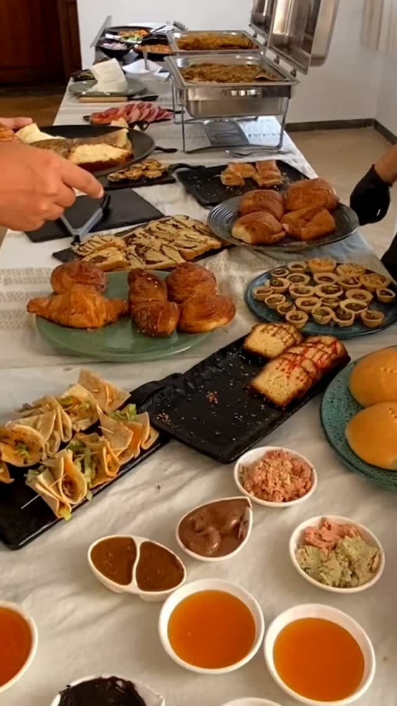
Lundi – vendredi · midi
Buffet déjeuner
Buffet à volonté : viande, poulet et fruits de mer, plats chauds tunisiens et salades.
24 DT / personne
Service de midi à 15h.
Salon de thé · Restaurant tunisien · Rooftop
Une table tunisienne, une vue sur la Médina.
Au cœur de la Médina de Tunis, avenue Bab Bnet : petits-déjeuners, déjeuners, pauses café et coucher de soleil sur les toits de la vieille ville.
Ouvert 7j/7 · 7h – 22h
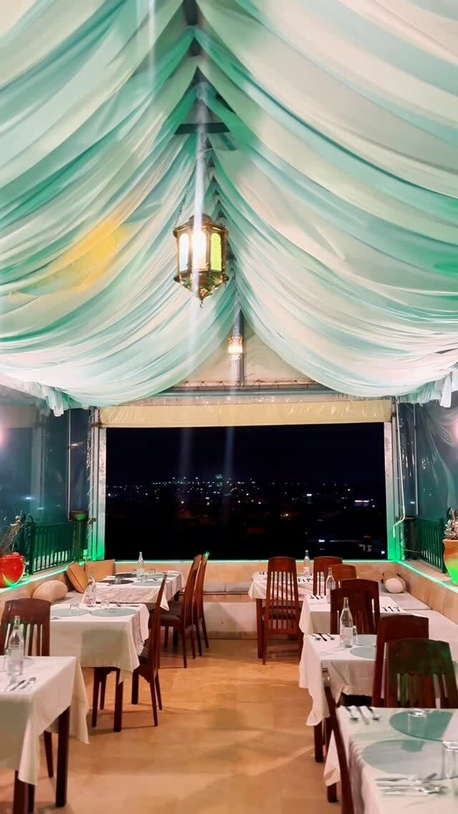
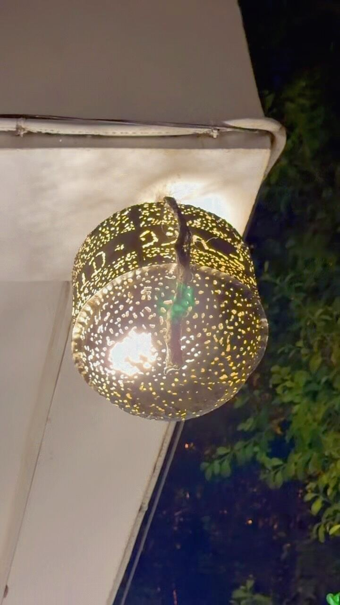
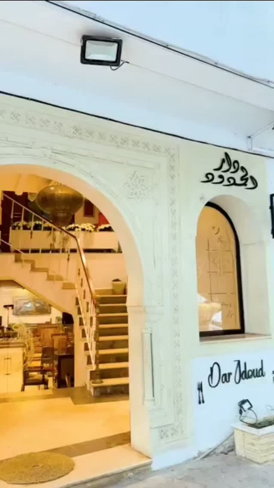
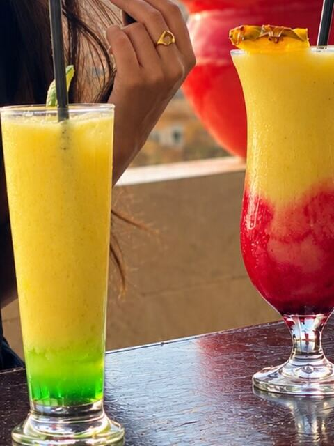
La maison
Une maison de la vieille ville qui garde toute son authenticité : murs blanchis, arcs sculptés, lanternes en cuivre, et tout en haut, une terrasse ouverte sur les toits de la Médina.
On y vient le matin pour un café et un jus frais, à midi pour le buffet, le week-end pour le brunch en famille, et le soir pour le coucher de soleil. Les murs accueillent aussi des soirées musicales et vos fêtes de famille.
« Chez Dar Jdoud, vous n’êtes pas simplement des invités, vous êtes chez vous. »— L’équipe Dar Jdoud
Buffets

Buffet à volonté : viande, poulet et fruits de mer, plats chauds tunisiens et salades.
24 DT / personne
Service de midi à 15h.
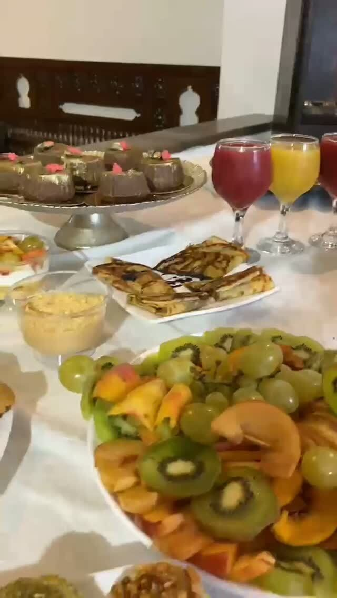
Un buffet gourmand pour commencer le week-end en famille ou entre amis, dans une ambiance tunisienne authentique.
29 DT / personne
Sur réservation au 51 564 564.
Exemples de plats déjà servis : le buffet change selon les jours.
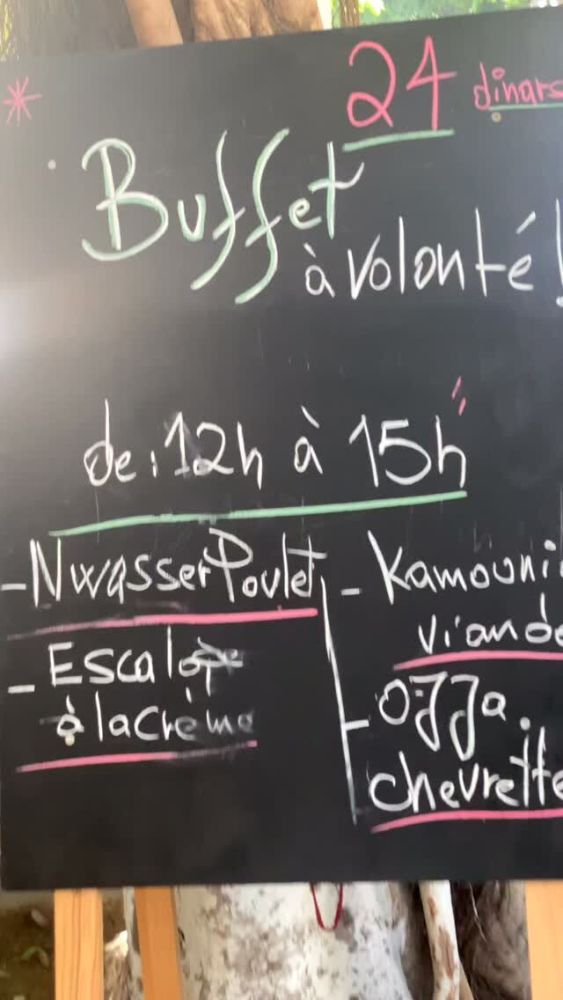
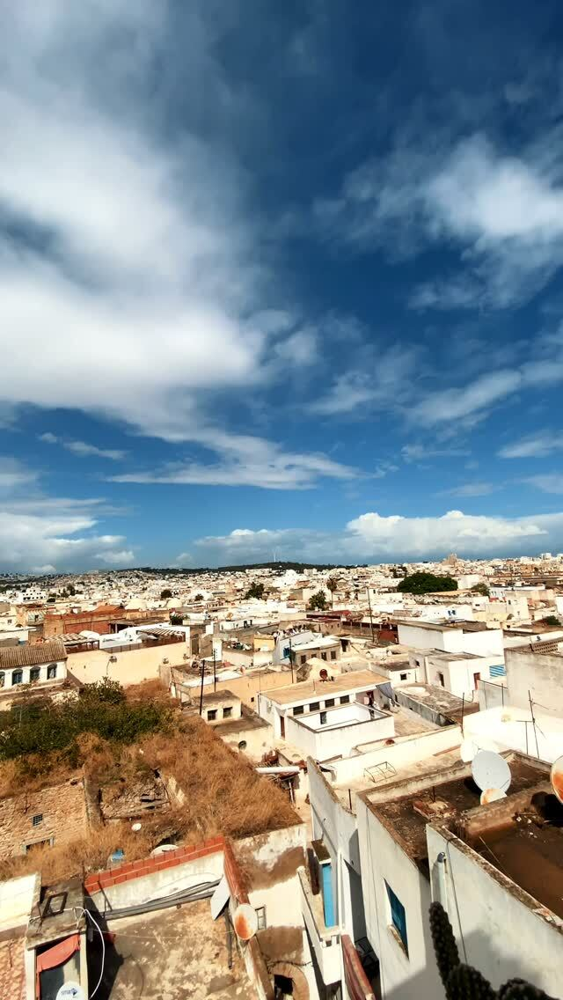
Le rooftop
Installez-vous sous les voilages et savourez des plats inspirés de notre patrimoine culinaire, entre traditions tunisiennes et inspirations internationales, avec une vue panoramique sur les toits de la vieille ville.
Salon de thé
Thé à la menthe et pâtisseries, café, jus de fruits frais pressés, cocktails sans alcool : à toute heure, de 7h à 22h.
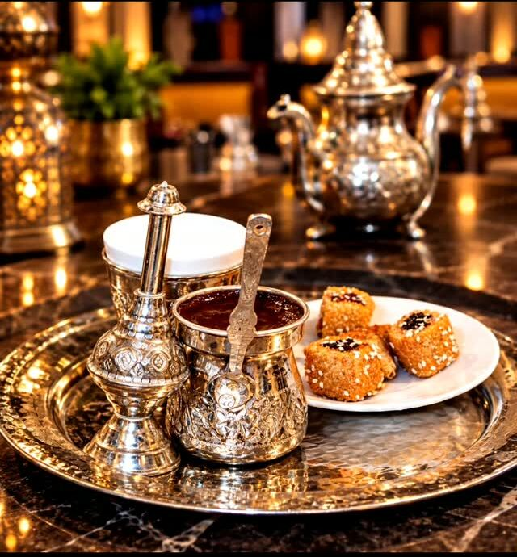
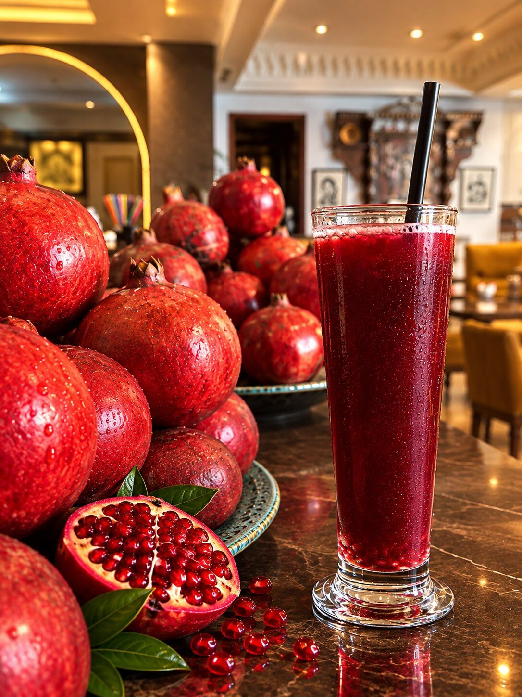
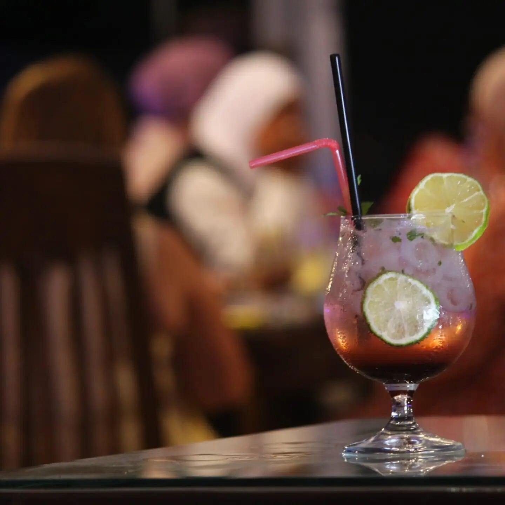
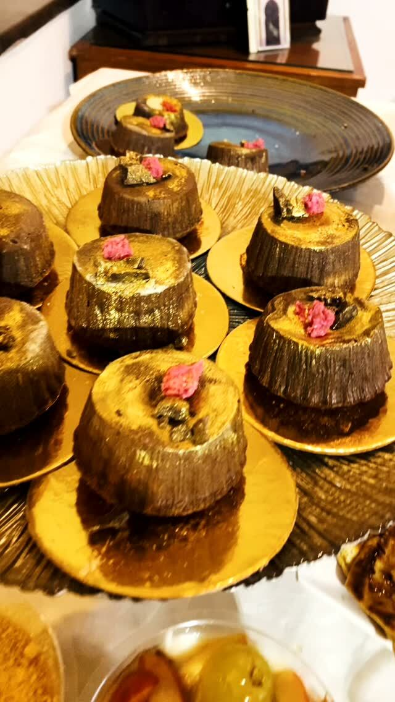
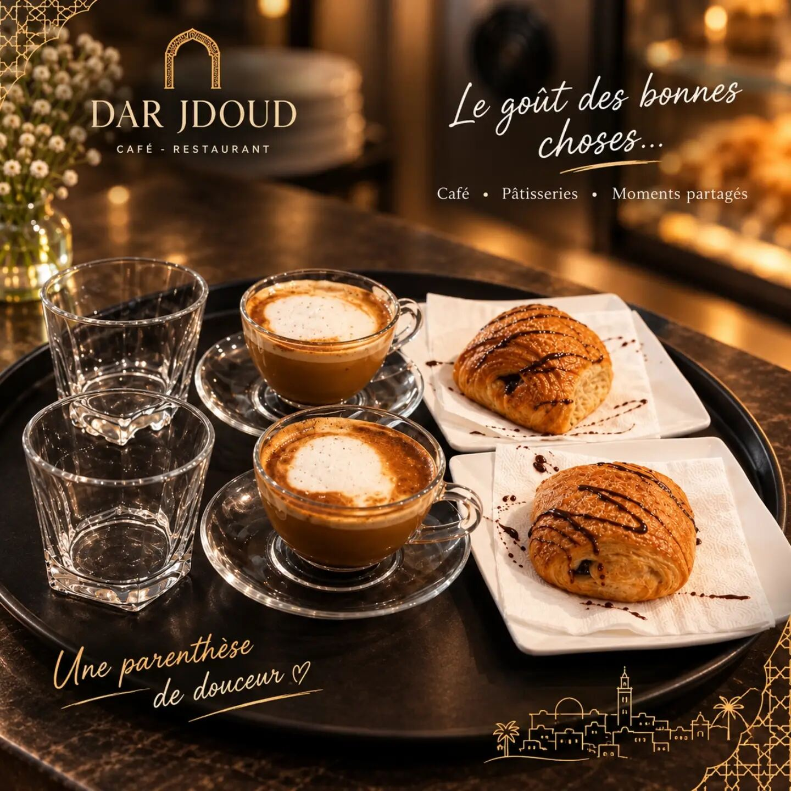
Salle des fêtes
Un espace chaleureux et raffiné pour célébrer vos moments les plus précieux, dans le cadre authentique de la Médina.
22 301 604 Ligne de la salle des fêtes · renseignements et réservations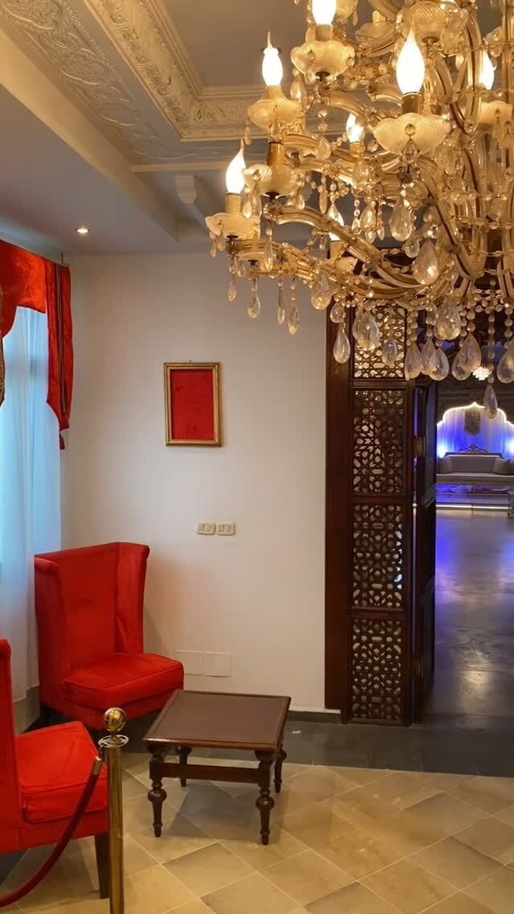
Infos pratiques
Horaires d’été et soirées spéciales annoncés sur Instagram.